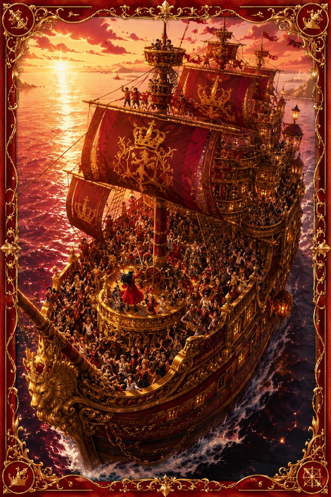
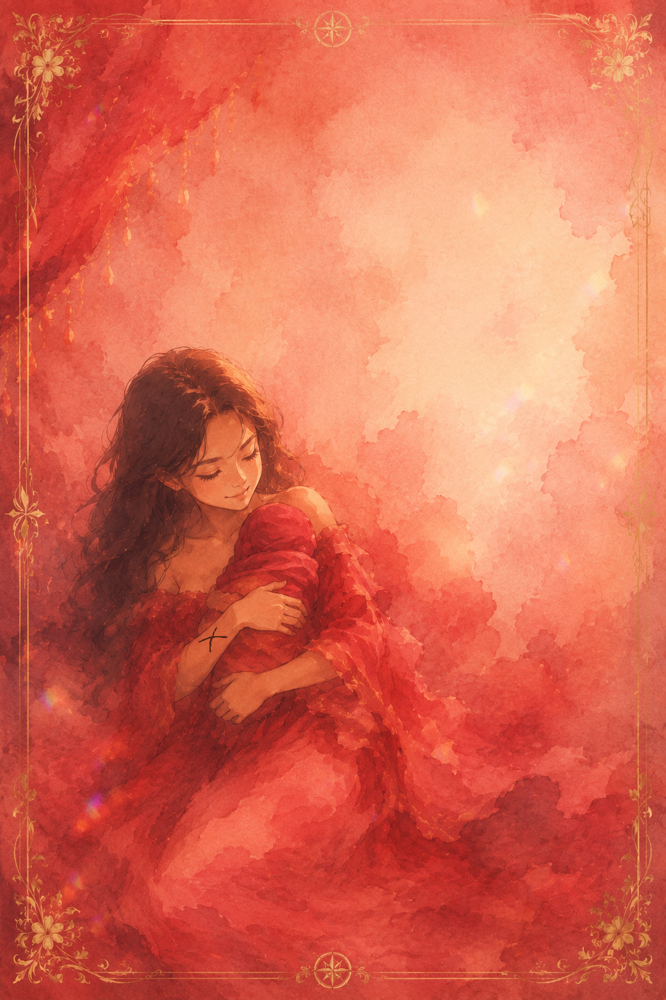

Dear Marjella Lajuan,
I can do all this through him who gives me strength.
— Philippians 4:13
Ordinarily, I think people read this verse and understand it to mean something along the lines of, “There are so many things I cannot deal with, but with God, I can.”
That is true, however, I think there is another way to look at this verse that may be relevant to you.
Often, I think people can feel overwhelmed. They see all the things they cannot do well, and they think to themselves,
“Dang, this impossible task is in front of me. Obviously, I cannot do it. I could not even do the last thing.”
But the encouragement I want to give is somewhat different.
Years ago, I remember listening to someone, though I do not remember where, say something really interesting. He said something along the lines of, “Sometimes, when you are not confident, you should have faith in those who believe in you.”
My personal analysis of you is that, since I have met you, you have been one of the most encouraging sisters. You are the heart of the family. I see this not only in the way people tend to come to you whenever they are around you, but also in the way you pull people together powerfully.
This is the heart of motherhood.
Often, the world talks about how women are not valued, but I think this is an incorrect view. In a world where men often tend to be the workers, women often tend to be the cornerstone of families. They may not always be valued financially, but they are often the heart of the relationships around them, often playing the role of matchmaker, friend, confidant, and social hub of their communities.
In this area, you show a natural genius. I actually think it is right to be afraid of things like this, because there are still areas where you struggle, areas where you need to grow, and areas where no level of growth will fully fix everything. In those places, you must learn to rely on others. But at the end of the day, you are not alone.
“For the eyes of the Lord range throughout the earth to strengthen those whose hearts are fully committed to him.”
— 2 Chronicles 16:9
The honest truth is that, no matter what you do, whether you get married or not, and whether you have children or not, is honeslly your choice and in the end you will always continue to exhibit those traits to thouse around you, because they are a side effect of your natural heart to be a servant.
And whatever you do, remember God. And remembers that God too believes in you.
No temptation has overtaken you except what is common to mankind. And God is faithful; he will not let you be tempted beyond what you can bear. But when you are tempted, he will also provide a way out so that you can endure it.”
— 1 Corinthians 10:13
Your fears no manter how big they may seem are pebbles to
God!!!
Ps: I'm really glad that I was able to make you an encouragement card. You're one of the people I've wanted to make one for, for a while.
PPs: Hope you enjoy the One piece-esque Art style.
PPPs: I'm giving you a thumbs up
With My Mind!